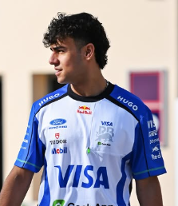

Arvid Lindblad
Arvid Lindblad
Team: Racing Bulls
Team Principal: Laurent Mekies
Number: 41
Nationality: United Kingdom
Debut: 2026
Born: 8 August 2007
History: British driver Arvid Lindblad entered Formula 1 as one of the most highly rated prospects produced by the Red Bull Junior Team. Known for his fearless driving style, aggressive racecraft, and exceptional pace in junior categories, Lindblad generated significant attention before even reaching Formula 1. Joining Racing Bulls, he was viewed as a long-term investment for Red Bull’s future driver program and one of the standout rookies of the 2026 season.
